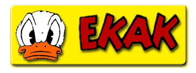
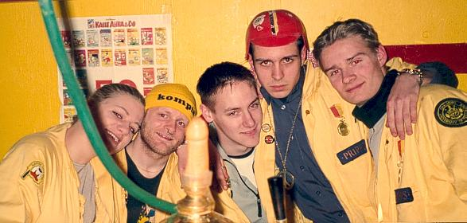

|
EKAK, Elektroteknologsektionens
Kalle Anka Kommitté, har som huvuduppgift att
främja intresset
för Quarl, bland annat genom att visa Kallefilm. Vi visar film på
de stora kalasen, men även vid andra tillfällen.
Vår samling
av Kallefilmer kan räknas till Nästan 150 stycken.
EKAK är även Chalmers officiella øhlhäfvarförening, och arrangerar alla officiella häfv på och inom Chalmers. Minst fyra häfv per år arrangeras, och de är öppna för alla teknologer.  |